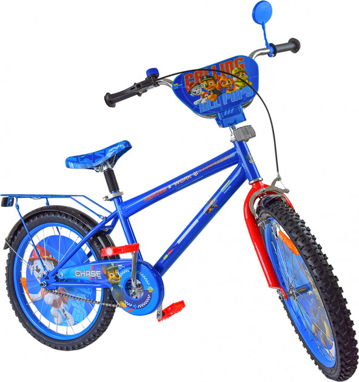
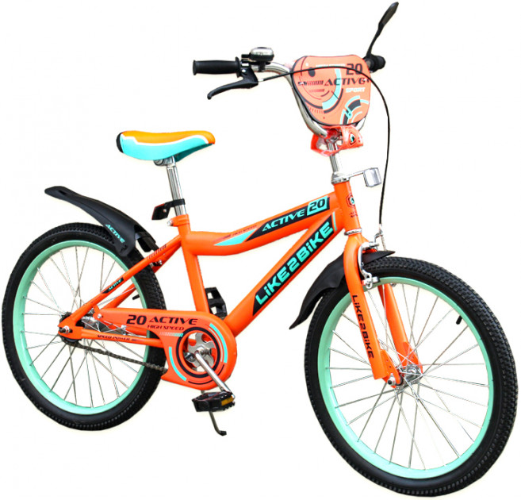
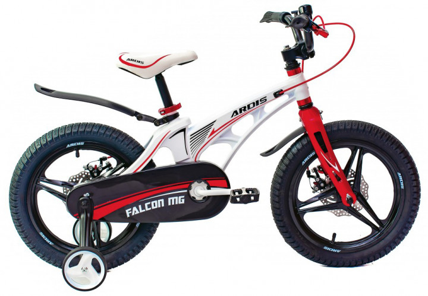
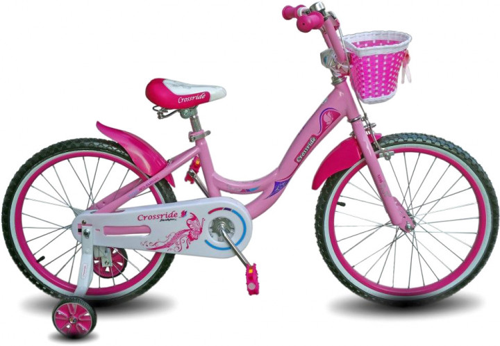
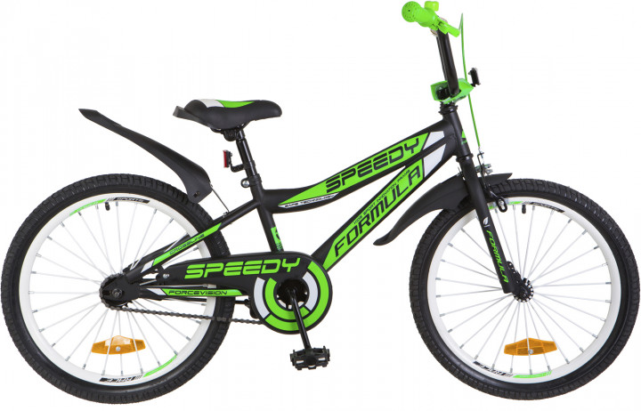
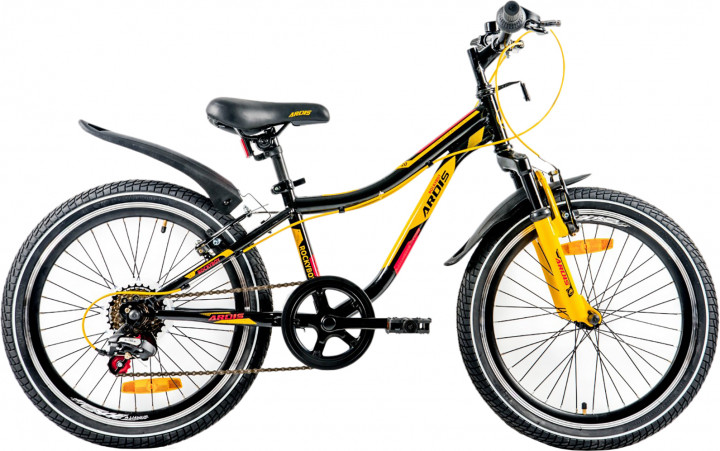

Disney
ціна 1900
КупитиОпис
Для тих, хто любить або вчиться активно крутити педалі - дитячі велосипеди з улюбленими героями всесвіту Disney. Міцні та надійні велосипеди кращим чином покажуть себе на звичайних дорогах і навіть на грунтових трасах.
Like2bike
ціна 1750
КупитиОпис
Для юних поціновувачів стильною їзди - велосипеди Like2bike. Сучасний дизайн буде радувати дитини, а міцні матеріали дозволять сміливо долати будь-яку відстань.
Ardis
ціна 3240
КупитиОпис
Велосипед Ardis Falcon 16 " - легка і приваблива дитяча модель, яка дозволить самим маленьким насолоджуватися їздою. Як і дорослі моделі, цей велосипед оснащений рамою з магнієвого сплаву, міцною і жорсткою вилкою, і колесами 16 дюймів. Вчасно загальмувати дозволить система дискових гальм. Яскравий дизайн зробить цей велосипед об'єктом гордості юного гонщика і постійним супутником під час прогулянок.
Crossride
ціна 2130
КупитиОпис
Велосипед Crossride Vogue and Classic 16 — яркий и надежный детский велосипед для девочки, который подарит массу приятных моментов вашему ребьонку. В его основе лежит высокопрочная стальная рама, которая без труда выдержит все падения и удары. На раму установлена жесткая стальная вилка, удобный руль, надежные тормоза, дополнительные боковые колесики для безопасного обучения, защита цепи и звезды от попадания одежды, мягкое седло созданное специально для детей.
Speedy
ціна 2340
КупитиОпис
Speedy с колёсами 20 дюймов подходит детям ростом от 115 до 130 см. Стилизованная под модный среди подростков вид велосипеда ВМХ, эта модель имеет яркий спортивный характер. На таком велике можно весь день гонять во дворе или по парку, он не боится препятствий и испытаний на прочность благодаря усиленным спицам и стальному ободу собственного производства Velotrade.
Ardis
ціна 3590
КупитиОпис
Велосипед Ardis Rocky Boy 20" — это подростковый велосипед с комплектующими хорошого уровня, который предназначен для активных детей в возрасте от 5 до 10 лет. Стильный дизайн, а также прочность и долговечность, понравятся как детям, так и их родителям. Дисковые тормоза остановят велосипед даже в самой непредсказуемой ситуации. Трансмиссия Shimano отвечает за четкое и своевременное переключение передач. А амортизационная вилка за комфорт